Texto extraído da edição fornecida, sem atualização normativa. Consulte a página original para conferir tabelas, formulários e instruções ilustradas. A numeração dos links corresponde à página do arquivo PDF.
Esta página contém conteúdo gráfico. Consulte a reprodução original abaixo.
Ver página original — tabelas, imagens e diagramas
Lei nº 8.112, de 11 de dezembro de
1990 e suas alterações.
Decreto nº 10.835, de 14 de
outubro de 2021
Instrução Normativa nº 70, de 27 de
setembro de 2022
Portaria SEDGG/ME nº 8.471, de 26
de setembro de 2022
1. LEGISLAÇÃO BÁSICA 2
É dever do servidor/empregado público/empregado público, da
Organização Militar (OM) e da Região Militar (RM) ler e acompanhar
a atualização da legislação que se refere aos assuntos tratados
neste Caderno de Orientação.
São referências de legislação:
Portaria SGP/SEDGG/ME nº 10.360,
de 6 de dezembro de 2022
Ver página original — tabelas, imagens e diagramas
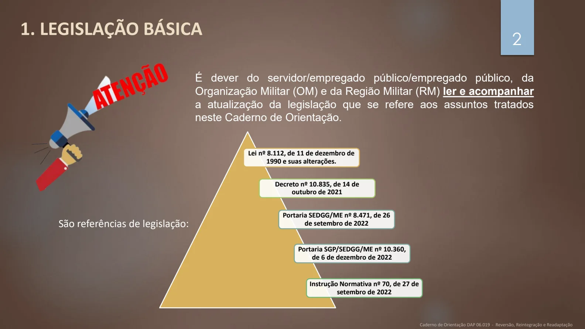
2. CONCEITOS:
2.1. REVERSÃO:
É o retorno à atividade de servidor aposentado:
a) cessada a invalidez; ou
b) no interesse da administração.
2.2. REINTEGRAÇÃO:
É a reinvestidura do servidor estável no cargo anteriormente
ocupado ou no cargo resultante de sua transformação, quando
invalidada sua demissão por decisão administrativa ou judicial,
com ressarcimento de todas as vantagens.
2.3. READAPTAÇÃO:
É a investidura do servidor em cargo de atribuições e responsabilidades
compatíveis com a limitação que tenha sofrido em sua capacidade física ou
mental verificada em inspeção médica.
Ver página original — tabelas, imagens e diagramas
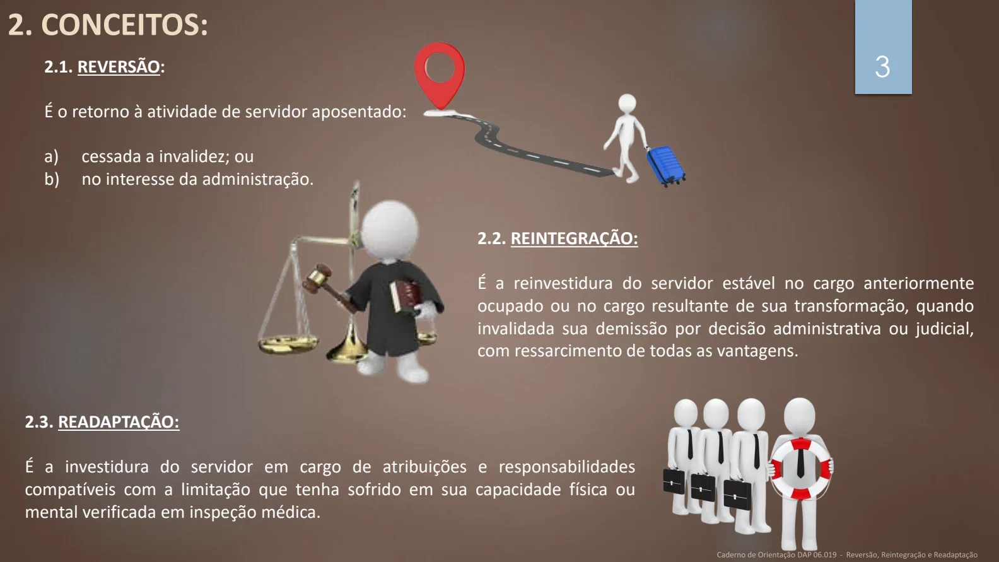
Esta página contém conteúdo gráfico. Consulte a reprodução original abaixo.
Ver página original — tabelas, imagens e diagramas
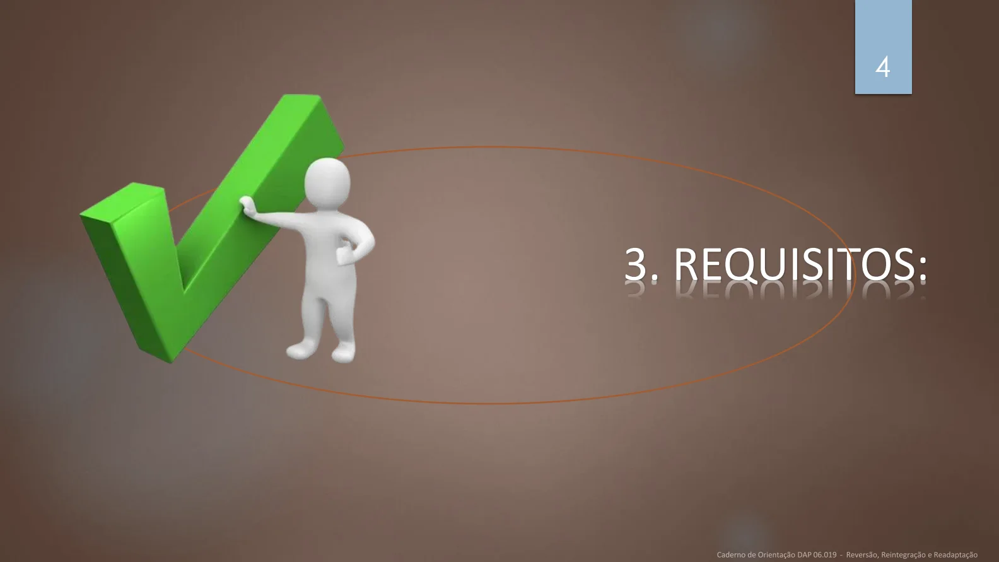
3. 1. REQUISITOS - REVERSÃO DE APOSENTADO POR INVALIDEZ :
A junta médica oficial deve
declarar insubsistentes
os motivos da aposentadoria
Ver página original — tabelas, imagens e diagramas
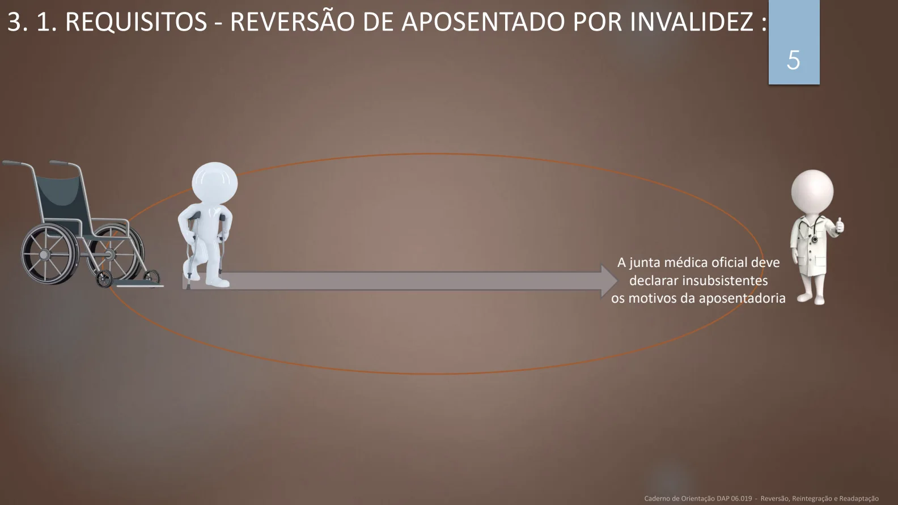
Haja cargo vago
Servidor tenha adquirido
estabilidade quando em atividade
A aposentadoria tenha sido
voluntária e ocorrida
nos cinco anos anteriores à
solicitação
Mediante solicitação
do servidor, desde que:
6
3. 2. REQUISITOS - REVERSÃO DE APOSENTADO, NO INTERESSE
DA ADMINISTRAÇÃO :
Certificação, pelo órgão ou
entidade, quanto à aptidão física e
mental do servidor para o exercício
das atribuições inerentes ao cargo.
Existência de dotação orçamentária e
financeira,
devendo ser observado o disposto na Lei
Complementar nº 101, de 4 de maio de 2000.
Ver página original — tabelas, imagens e diagramas
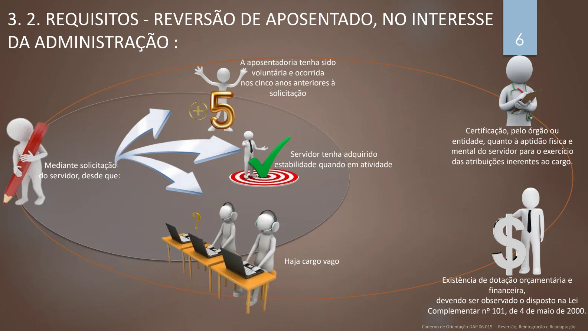
3. 3. REQUISITOS - REINTEGRAÇÃO:
3. 4. REQUISITOS - READAPTAÇÃO:
Constatação, por junta médica oficial, de limitação da
capacidade física ou mental que impeça o servidor de
permanecer no exercício do cargo que ocupa.
Ser servidor(a) estável Decisão administrativa ou judicial de
invalidação da demissão de servidor
estável.
Ver página original — tabelas, imagens e diagramas
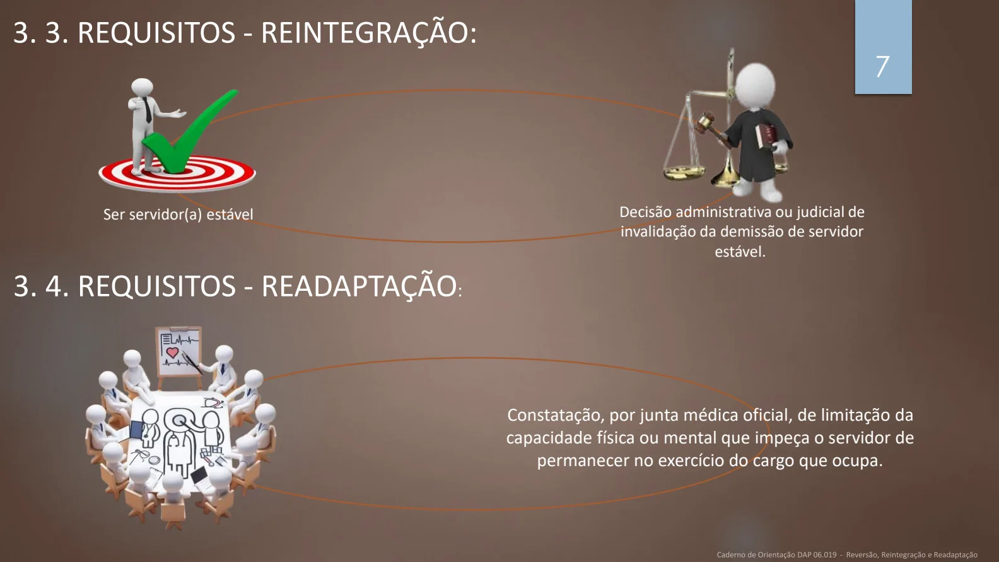
Informações gerais
PDF · p. 8Esta página contém conteúdo gráfico. Consulte a reprodução original abaixo.
Ver página original — tabelas, imagens e diagramas
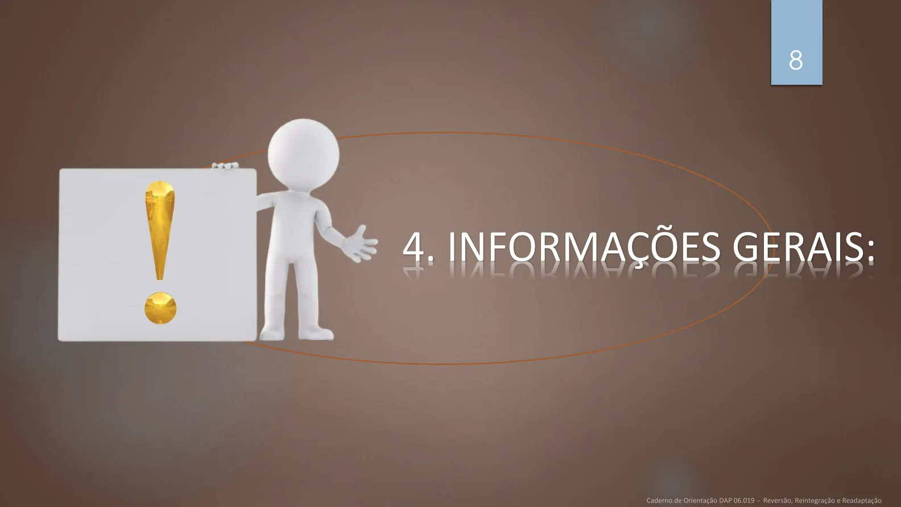
Informações gerais
PDF · p. 94.1. INFORMAÇÕES GERAIS - REVERSÃO:
a) A reversão poderá ocorrer em qualquer órgão ou entidade da Administração Pública Federal
direta, autárquica e fundacional, desde que seja no MESMO cargo, nível, classe e padrão em
que ocorreu a aposentadoria ou em outro cargo, quando reorganizado ou transformado.
b) A reversão será efetivada pela publicação da portaria, do Ministro da Defesa ou da autoridade por
ele delegada, no Diário Oficial da União.
c) Será tornado sem efeito o ato de reversão se o exercício não ocorrer no prazo de 15 (quinze) dias.
d) Na reversão por cessação da invalidez, encontrando-se provido o cargo, o servidor
exercerá suas atribuições como excedente de lotação, até a ocorrência de vaga.
e) O limite de idade para o exercício de direito à reversão é de 75 (setenta e cinco) anos.
Ver página original — tabelas, imagens e diagramas
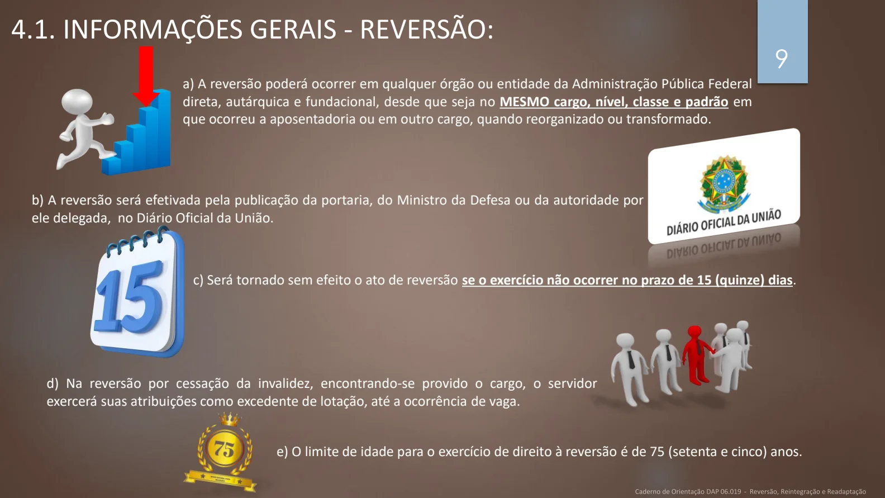
Informações gerais
PDF · p. 104.1. INFORMAÇÕES GERAIS – REVERSÃO (cont.):
g) São assegurados ao servidor que reverter à atividade os mesmos direitos, garantias, vantagens e
deveres aplicáveis aos servidores em atividade.
h) O servidor que reverter à atividade, no interesse da administração, SOMENTE terá nova aposentadoria
com os proventos calculados com base nas regras atuais, se permanecer em atividade por, no mínimo, 5
(cinco) anos.
f) O servidor que retornar à atividade por interesse da administração perceberá, em substituição aos
proventos da aposentadoria, a remuneração do cargo que voltar a exercer, inclusive com as vantagens
de natureza pessoal que percebia anteriormente à aposentadoria.
i) Efetivada a reversão, o servidor será lotado conforme as necessidades do órgão.
j) Na hipótese de reversão no interesse da administração, inexistindo vaga na unidade do órgão ou da
entidade requerida pelo servidor, este poderá optar por ser lotado em outra, dentre as oferecidas pela
administração, ficando para este fim vedado o pagamento de ajuda de custo para deslocamento.
Ver página original — tabelas, imagens e diagramas
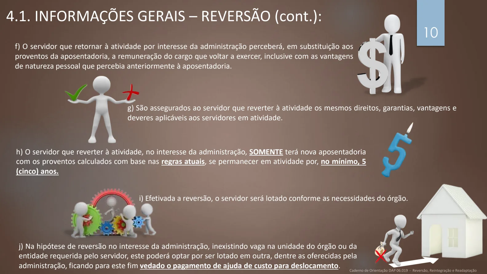
Informações gerais
PDF · p. 11a) O direito de requerer reintegração está sujeito a prescrição quinquenal*. O
prazo de prescrição será contado da data da publicação do ato impugnado ou da
data da ciência pelo interessado, quando o ato não for publicado.
b) Na hipótese de o cargo ter sido extinto, o servidor ficará em disponibilidade. O retorno à atividade
de servidor em disponibilidade far-se-á mediante aproveitamento obrigatório em cargo de atribuições
e vencimentos compatíveis com o anteriormente ocupado. O órgão central do Sistema de Pessoal Civil
determinará o imediato aproveitamento de servidor em disponibilidade em vaga que vier a ocorrer nos
órgãos ou entidades da Administração Pública Federal.
c) Encontrando-se provido o cargo, o seu eventual ocupante será reconduzido ao cargo de
origem, sem direito à indenização ou aproveitado em outro cargo, ou, ainda, posto em
disponibilidade.
4.2. INFORMAÇÕES GERAIS - REINTEGRAÇÃO:
*Lei nº 8.112, de 1990, art. 110, inciso I
A reintegração de ex-servidores em cumprimento de decisão judicial,
transitada em julgado é competência dos Ministros de Estado e Advogado
Geral da União, vedada a subdelegação.
Ver página original — tabelas, imagens e diagramas
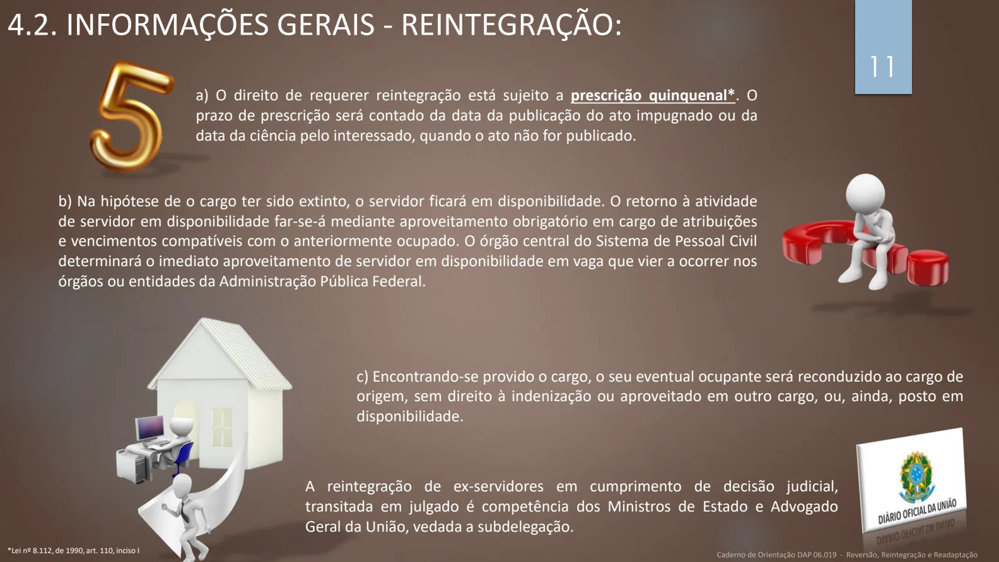
Informações gerais
PDF · p. 12c) Se julgado incapaz para o serviço público, o readaptando será aposentado.
d) A readaptação será efetivada em cargo de atribuições afins, respeitada a habilitação
exigida, nível de escolaridade e equivalência de vencimentos e, na hipótese de
inexistência de cargo vago, o servidor exercerá suas atribuições como excedente, até a
ocorrência de vaga.
4.3. INFORMAÇÕES GERAIS - READAPTAÇÃO:
a) Readaptação é a investidura do servidor em cargo de atribuições e responsabilidades
compatíveis com a limitação que tenha sofrido em sua capacidade física ou mental
verificada em inspeção médica.
b)A readaptação consiste na incumbência de atribuições e responsabilidades de outro cargo
efetivo que sejam compatíveis com a limitação que o servidor tenha sofrido em sua
capacidade física ou mental, constatada em inspeção médica, e perdurará enquanto o
servidor permanecer nesta condição, mantida a remuneração do cargo de origem.
Ver página original — tabelas, imagens e diagramas
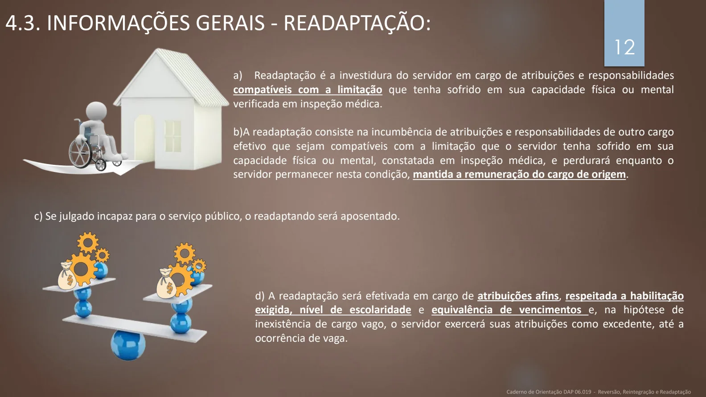
Informações gerais
PDF · p. 13f) Caberá à perícia oficial determinar a periodicidade da reavaliação do servidor, que não excederá
a 2 (dois) anos, exceto em casos excepcionais devidamente fundamentados.
4.3. INFORMAÇÕES GERAIS – READAPTAÇÃO (cont.):
e) Compete exclusivamente à OM a que o servidor estiver vinculado avaliar a possibilidade
de readaptação, identificando, a partir das limitações atestadas pela junta médica oficial, as
atribuições que podem ser exercidas pelo readaptando, bem como se possui a habilitação
e o nível de escolaridade exigidos para o cargo efetivo de destino.
g) A autoridade competente para determinar a readaptação é o Ministro da Defesa,
podendo haver delegação de competência mediante previsão em ato normativo
específico.
h) A readaptação será realizada por intermédio de portaria publicada no Diário
Oficial da União, em que será estabelecido ao servidor as atribuições e
responsabilidades do cargo efetivo de destino.
Ver página original — tabelas, imagens e diagramas
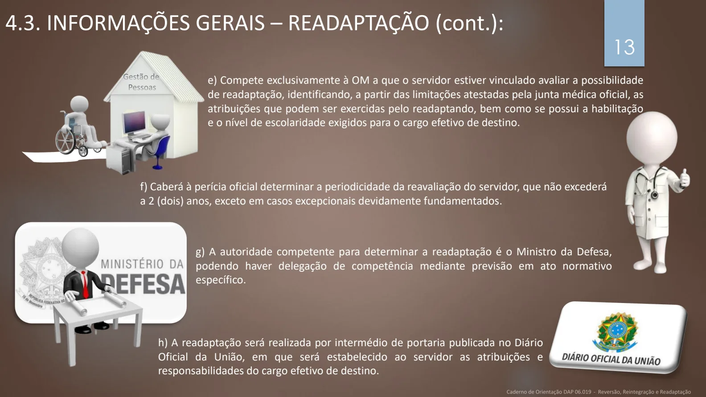
Documentos necessários
PDF · p. 145. DOCUMENTOS NECESSÁRIOS:
DOCUMENTO RESPONSÁVEL PELO
FORNECIMENTO/ELABORAÇÃO OBSERVAÇÕES
Requerimento Servidor No SPED – conforme descrição do item 6
Informação OM No SPED – conforme descrição do item 6
Portaria que publicou a aposentadoria Servidor/OM -
Declaração de bens e valores e Declaração de que não acumula cargo público Servidor Anexo A
Ata de inspeção de saúde JISG Deve ser homologada pela DSAU
5.1. REVERSÃO:
5.2. REINTEGRAÇÃO:
DOCUMENTO RESPONSÁVEL PELO
FORNECIMENTO/ELABORAÇÃO OBSERVAÇÕES
Portaria que publicou a demissão Servidor/OM -
Decisão administrativa/judicial DAP/Poder Judiciário -
5.3. READAPTAÇÃO:
DOCUMENTO RESPONSÁVEL PELO
FORNECIMENTO/ELABORAÇÃO OBSERVAÇÕES
Requerimento Servidor No SPED – conforme descrição do item 6
Comprovante de escolaridade e/ou habilitação profissional
exigidos para o cargo a ser provido. Servidor -
Informação OM No SPED – conforme descrição do item 6
Documento contendo a denominação e o código do cargo a ser
provido, das atribuições, dos vencimentos e das cargas horárias
dos cargos ocupados e a serem providos.
OM -
Ata de inspeção de saúde JISG Deve ser homologada pela DSAU
Ver página original — tabelas, imagens e diagramas
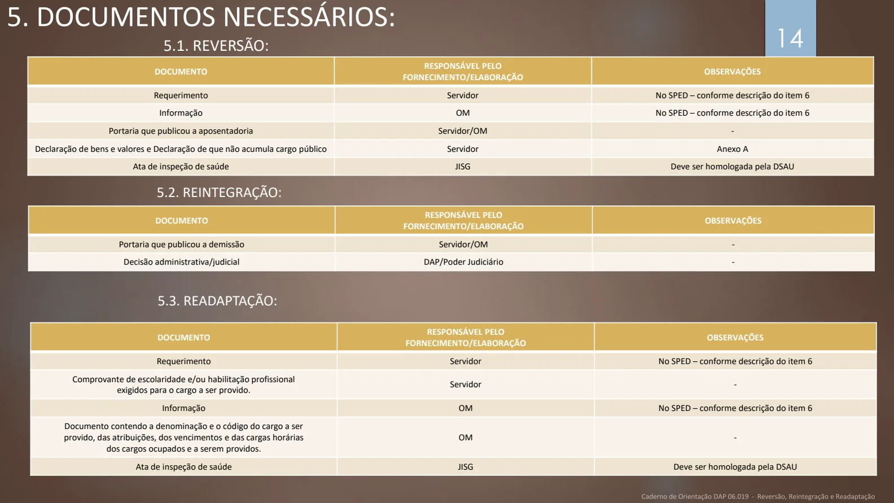
Documentos necessários
PDF · p. 155.1. REDIGINDO OS DOCUMENTOS NO SPED (Requerimento e Informação)
1
2
4
5
Requerimento Informação
3
6
Ver página original — tabelas, imagens e diagramas
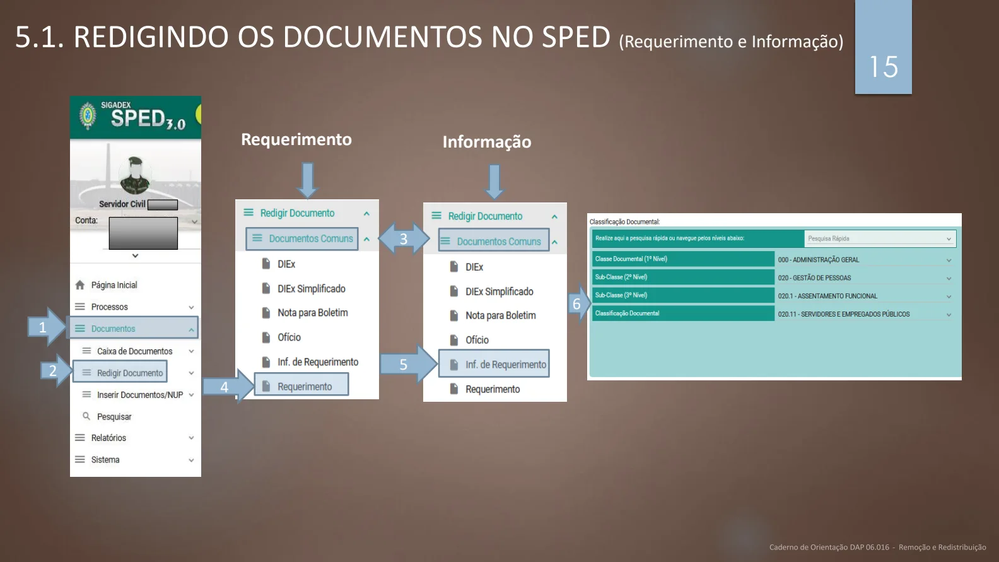
Esta página contém conteúdo gráfico. Consulte a reprodução original abaixo.
Ver página original — tabelas, imagens e diagramas
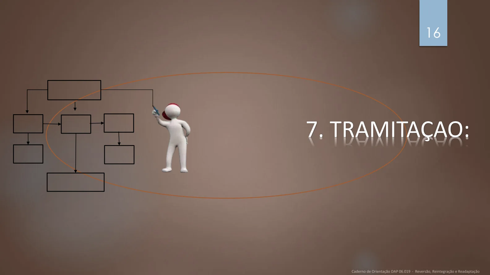
7.1. TRAMITAÇÃO - REVERSÃO:
*Seção Regional de Pessoal Civil
SERVIDOR
INTERESSADO
• Fazer o
requerimento
OM
• Receber o
requerimento
• Elaborar a
informação
• Encaminhar o
servidor para
Junta de
Inspeção de
Saúde (JISG)
da Guarnição
JISG
• Avaliar o
servidor
• Elaborar o
laudo médico
• Devolver o
processo
para a OM
OM
• Encaminhar o
requerimento
para a SRPC*
SRPC
• Encaminhar o
requerimento
para a DAP*
DAP
• Elaborar
portaria, caso
o servidor
preencha as
condições
para a
reversão.
• Publicar
portaria no
DOU e no
Aditamento
Técnico A ao
Bol/DGP
• Comunicar a
SRPC
SRPC
• Comunicar a
OM sobre a
reversão do
servidor.
OM/SRPC
• Atualizar o
cadastro,
com a
recepção do
servidor no
sistema
Ver página original — tabelas, imagens e diagramas
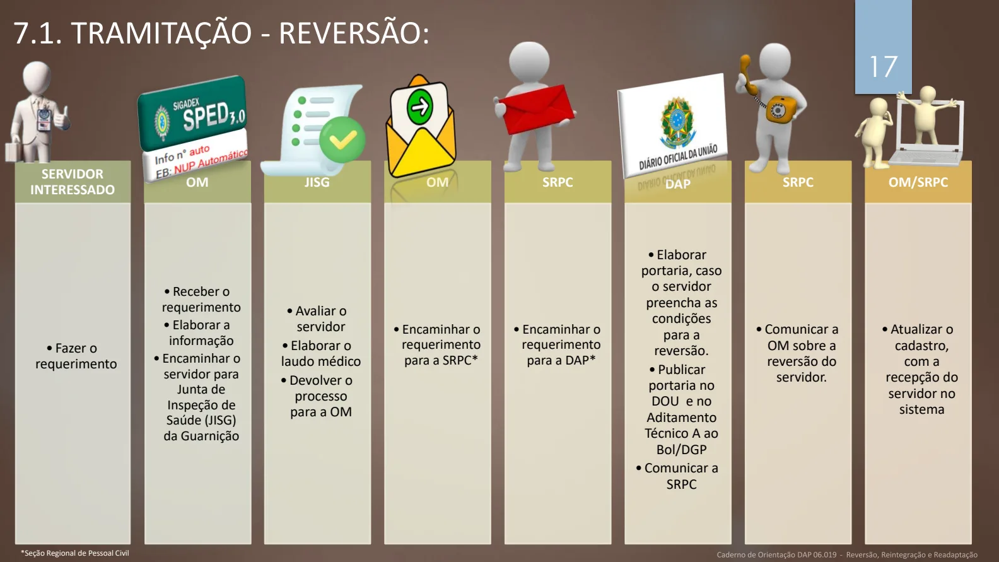
7.2. TRAMITAÇÃO - REINTEGRAÇÃO:
*Seção Regional de Pessoal Civil
ÓRGÃO DETERMINANTE
(DECISÃO ADMINISTRATIVA
ou JUDICIAL)
• Se for determinação
judicial: o poder
judiciário deve
encaminhar a decisão
para a DAP , via
Ministério da Defesa,
via Gab Cmt Ex
• Se for determinação
administrativa: a
Assessoria de
Correição/AAAJ/DAP
encaminha a decisão
para a SPC/DAP
SPC/DAP
• Receber a decisão
• Encaminhar o
processo ao
Ministério da
Defesa, via Gab Cmt
Ex
MINISTÉRIO DA
DEFESA
• Elaborar portaria e
publicar no DOU
SPC/DAP
• Publicar a portaria no
Aditamento Técnico
A ao Bol/DGP
• Comunicar a SRPC
OM/SRPC
• Atualizar o cadastro,
com a recepção do
servidor no sistema
Ver página original — tabelas, imagens e diagramas
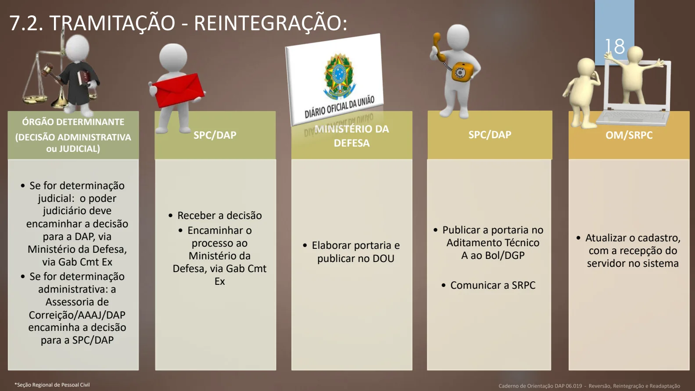
SERVIDOR
INTERESSADO
• Fazer o requerimento
OM/SRPC*
• Receber o
requerimento
• Elaborar a
informação
• Encaminhar o
servidor para Junta
de Inspeção de
Saúde (JISG) da
Guarnição
JISG
• Avaliar o servidor
• Elaborar o laudo
consubstanciado,
relacionado o grau
de incapacidade do
servidor e
detalhando a
limitação física ou
mental existente.
• Devolver o
processo para a
OM/SRPC
OM/SRPC
• Verificar se o
processo está
acompanhado do
laudo médico, do
código do cargo a
ser provido, dos
vencimentos e das
cargas horárias dos
cargos ocupados e
a serem providos.
• Encaminhar o
processo para a
DAP/Diretoria de
Saúde (DSAU)
DSAU
• Homologar o laudo
médico e
encaminha o
processo para a
SPC/DAP
DAP
• Elaborar portaria,
caso o servidor
preencha as
condições para a
reversão.
• Publicar portaria
no DOU e no
Aditamento
Técnico A ao
Bol/DGP
OM/DRPC
• Atualizar o
cadastro, com a
recepção do
servidor no
sistema
19
7.3. TRAMITAÇÃO - READAPTAÇÃO:
*Seção Regional de Pessoal Civil
Ver página original — tabelas, imagens e diagramas
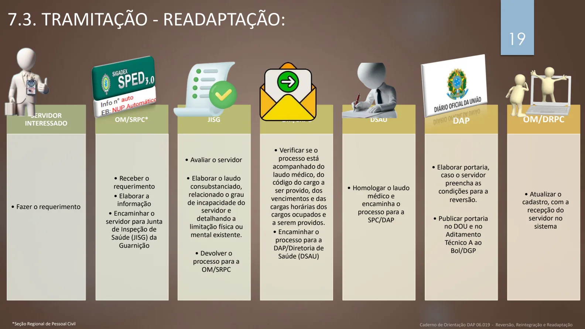
Fontes e elaboração
PDF · p. 20ELABORAÇÃO:
ASSESSORIA TÉCNICA DA SPC/DAP
SUBSEÇÃO DE CADASTRO DA SPC/DAP
MARÇO DE 2024
Para conhecer melhor o assunto, leia as
legislações indicadas no início deste caderno, disponíveis no link:
https://legis.sigepe.gov.br/legis/pesquisa-avancada
Ver página original — tabelas, imagens e diagramas
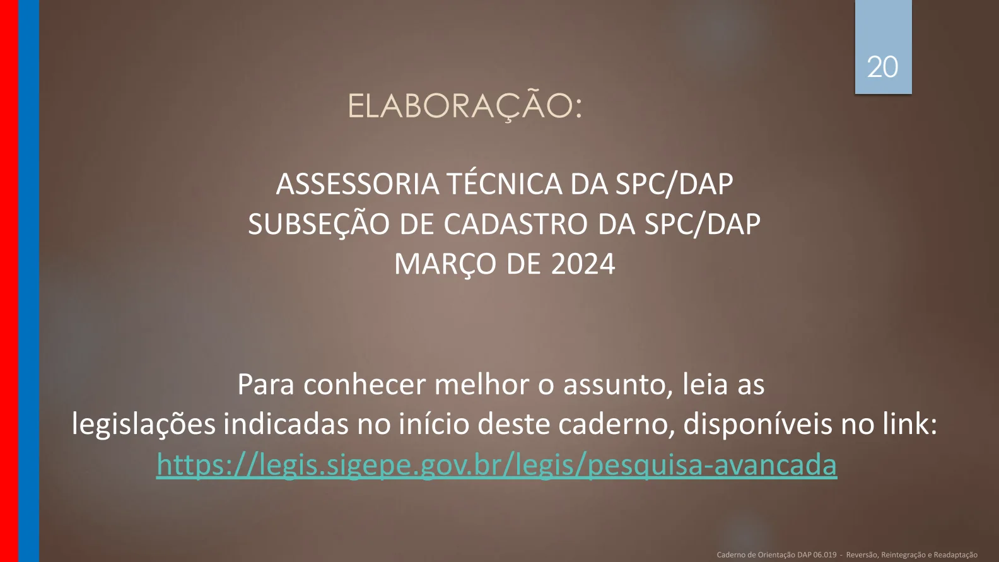
Anexo — declaração
PDF · p. 21ANEXOS
ANEXO A
Declaração de Não Exercício em Outro Cargo Público e de Bens e Valores Possuídos
MINISTÉRIO DA DEFESA
EXÉRCITO BRASILEIRO
(escalões hierárquicos até a OM expedidora)
(Denominação histórica)
DECLARAÇÃO DE NÃO EXERCÍCIO EM OUTRO CARGO PÚBLICO E DE BENS E VALORES
POSSUÍDOS
Eu, ______________________________________________________,
brasileiro (a), estado civil _____________ , residente e domiciliado (a) à
_______________________________________, para fins de REVERSÃO,
especificamente no Comando do Exército, que não exerço cargo ou função pública e que
possuo os seguintes bens:
_______________________________________________________________________
_______________________________________________________________________
_______________________________________________________________________
(Local e data)
____________________
Nome e assinatura
Ver página original — tabelas, imagens e diagramas
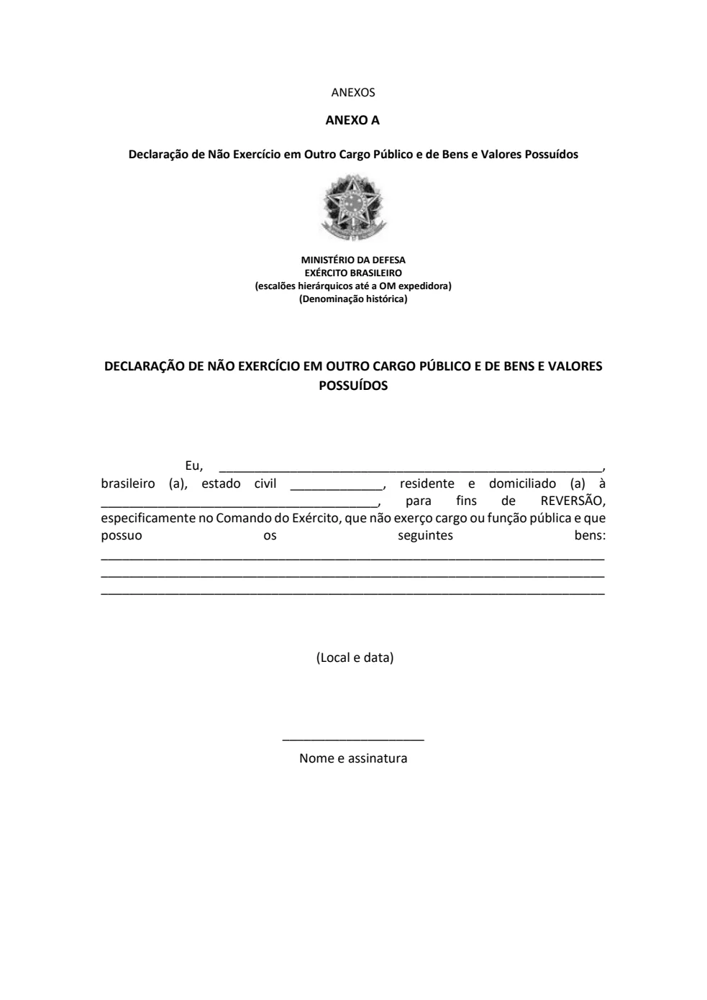